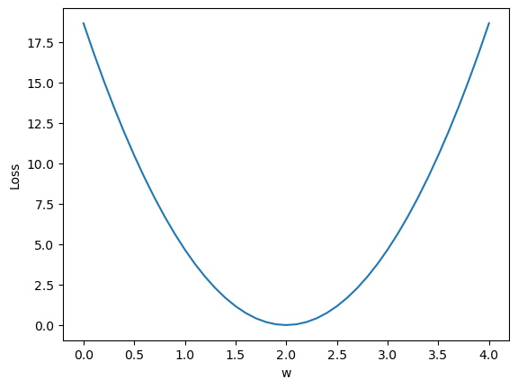
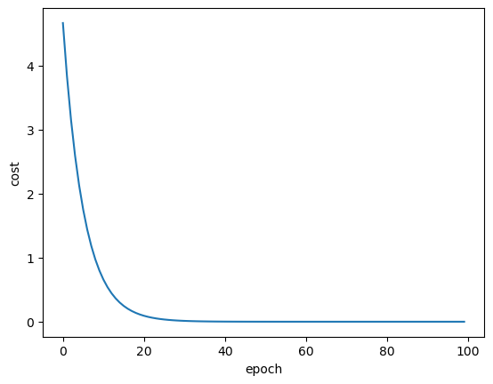
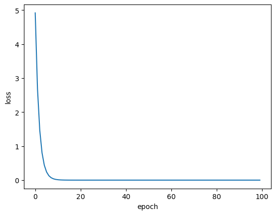
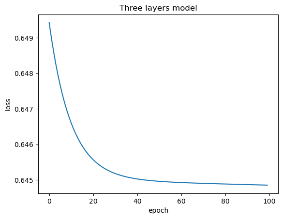

DL入门笔记
线性模型
1 | import numpy as np |
Output:

梯度下降算法
1.梯度下降
1 | import matplotlib.pyplot as plt |
Output:

2.随机梯度下降（SGD）
\[ w=w-\alpha\frac{\partial cost}{\partial w}\Rightarrow w=w-\alpha\frac{\partial loss}{\partial w} \]
\[ \frac{\partial cost}{\partial w}=\frac{1}{n}\sum_{i=1}^n 2x_i(x_i\cdot w-y_i) \]
\[ \Downarrow \]
\[ \frac{\partial loss_i}{\partial w}=2x_i(x_i\cdot w-y_i) \]
1 | import matplotlib.pyplot as plt |

| GD | SGD | Batch | |
|---|---|---|---|
| 性能 | \(\downarrow\) | \(\uparrow\) | \(---\) |
| 时间复杂度 | \(\downarrow\) | \(\uparrow\) | \(---\) |
Back Propagation
\(w\)是 Tensor（张量类型），Tensor
中包含 data 和 grad ，它们也是
Tensor。grad 初始为 None，调用 l.backward()
方法后 w.grad 为 Tensor，故更新 w.data
时需使用 w.grad.data。如果\(w\)需要计算梯度，那构建的计算图中，跟\(w\)相关的 Tensor 都默认需要计算梯度。
1 | import torch |
\(w\)是Tensor， forward函数的返回值也是Tensor，loss函数的返回值也是Tensor
本算法中反向传播主要体现在，l.backward()。调用该方法后
w.grad 由 None 更新为 Tensor 类型，且
w.grad.data 的值用于后续 w.data 的更新。
l.backward()
会把计算图中所有需要梯度(grad)的地方都会求出来，然后把梯度都存在对应的待求的参数中，最终计算图被释放。取tensor中的data是不会构建计算图的。
1 | import torch |
Pytorch实现线性模型
补一点python
1 | def func(*args, **kwargs): |
输出：
1 | (1, 2, 4, 3) |
一颗星表示元组，两颗星表示字典
创建 class 时要保证 callable：
1 | class Foorbar: |
1 | import torch |
神经网络
处理多特征问题
1 | import numpy as np |

1 | # 参数说明 |
输出
1 | layer1_weight tensor([[-0.1711, 0.3217, 0.2965, -0.2408, -0.0990, 0.2816, -0.0683, -0.3214], |